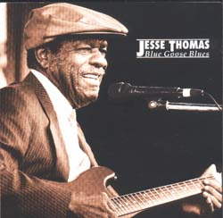
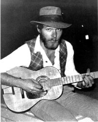
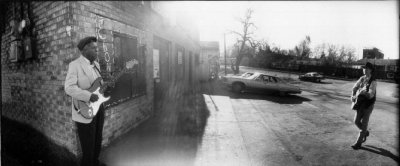

 "Ветеранский блюз, как хорошо выдержанный коньяк, пользовался почтением широкой публики и вызывал восторг у пишущей критики... Среди блюзовых старцев, кому на склоне лет довелось впервые увидеть рецензию на свой альбом в "биллбоарде" (в данном случае еще и украшенную максимальным колличеством звезд) оказался певец-гитарист Джесси Томас, который никогда не пользовался особой известностью. Свой год рождения он сам точно не помнит, но впервые эту свою песенку - о веселом заведении с названием "грустный гусь" он записал в 1929м, ему было тогда около 20-ти. Значит, к моменту записи альбома 1995 года пролетело чуть не 7 десятилетий. "Блюзовую геронтологию - в жизнь".Мягкая романтичность общего звучания альбома определила выбор его для "рождественского" выпуска программы. Два года назад в Интернете не было никакой информации об этом альбоме, а печатные рецензии оказались не вполне достоверными. По этой причине в передаче есть одна досадная ошибка, которую здесь легко заметить. Очень интересно, слушает ли кто-то внимательно эти инетные выпуски ВСЕГО ЭТОГО БЛЮЗА, а посему объявляется конкурс на ловлю этой ошибки; призы - блюзовые! NB! Переиздание этого альбома на известном блюзовом лейбле Black Top получило новое название: Lookin' For That Woman. "...Thomas' delivery is confident, easy and sly..." |